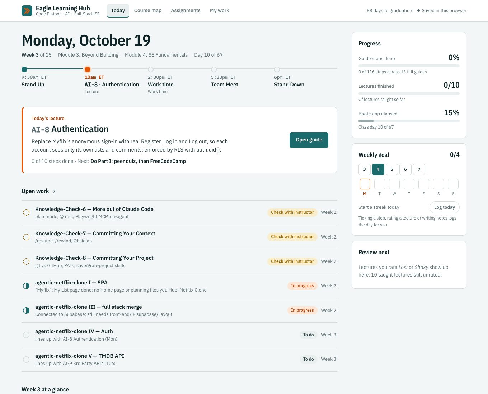
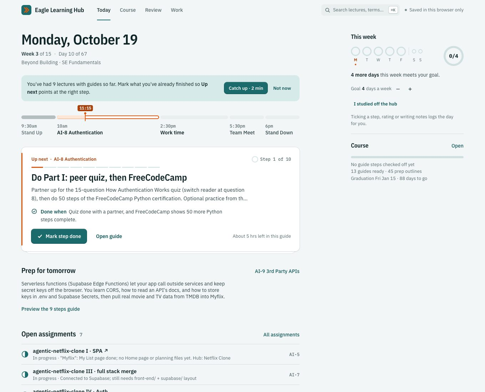

Up next · AI-8
Mark step doneDoneOpen guide
20 October, 2026
I'm in Code Platoon's 15-week AI and full-stack bootcamp. Every day has Stand Up, a lecture, work time and homework, and the course moves on whether you finished or not.
Between classes, on my phone, I kept asking the same question: what do I do now? So I built a study hub to answer it. Then I audited it, rebuilt it, and gave it a second pass on craft and motion. Three versions in three days, solo.
up next
ʌp ˈnɛkst
noun
The one step to do right now: named plainly, with what done looks like, and finishable right where you see it.
The first version pointed at a lecture. To do anything, I had to open the guide, scroll, and find step 1.
Now Today names the step and finishes it in place. The button says Done for a beat, the next step comes forward from the card peeking behind it, and the week's ring fills in.
v1 looked finished, so I had two Claude agents review it the way a stranger would: Nielsen's ten heuristics, eight real tasks, and every claim measured in a browser. It scored 3 out of 5. The rebuild scored 4.1
Then I asked a harder question: does it feel like Linear or Things? Not yet. Everything was a 1px ring, there were 11 different corner radii, and nothing moved where the real change happened. v3 answers that.


v3 started with three rules. Depth means something: rows sit flat, things you act on sit one level up, and floating layers two or three. Show the change: nothing teleports. Keep the eye still: the next thing lands where you're already looking.
Hover tints and lifts live on pseudo-elements, so only opacity and transform ever move. Watch the button lift, press in, and say Done.
Up next · step 2 of 10
Up next · AI-8
On a phone, the actions float in a pill above the tab bar, and the tab bar slides away while you read. Tick a step and the rail fills down to the next one.
Rate it and a sheet rises from the bottom. The thumb slides to your answer, it tells you the real day it comes back, and it closes itself.
The hub redraws whole views, so v2's progress bars and counts just jumped. v3 remembers every value it showed. After any change, it starts from what you last saw and moves to what's true now.
Come back from a lecture and Course scrolls to where you were, marks the row you came from, then fills in what you just did.
Fifty-eight lectures is a lot of scrolling. ⌘K searches lectures, key terms and assignments, one line per result, with the match highlighted.
The palette itself never animates. I open it many times a day, and a fade would only slow me down.
On day one, nine lectures I'd attended showed up in amber as "Not started". The hub didn't exist when I did that work, so it called it failure.
Now each color has one job. Teal means progress, orange means now, and amber is only for real problems. Past work I haven't ticked is just grey.
v2 showed nine "Show meaning" buttons in a grid. Now key terms come one card at a time. Say it out loud, flip it, then answer. A known card tilts away and the next one comes forward.
Space and the arrow keys work too, instantly, with no animation in the way.
Every motion answers "what just happened?" Nothing moves for decoration, and all of it turns off when your system asks for reduced motion.2
Every score here comes from reviews of an app built for one user: me. Next I'm running the same eight tasks with five classmates, and timing how long it takes them to find what to do now.
A design system grew out of this: 26 components, with tokens for elevation, rings and motion, all generated from the shipped code so it can't drift.
The audits came from my ux-auditor agent and the research and design briefs from my ui-designer agent (36 Mobbin searches), both running in Claude Code. I set the bar, chose what to fix, and decided what shipped. A Playwright script checks 20 motion rules after every change. Set in IBM Plex.